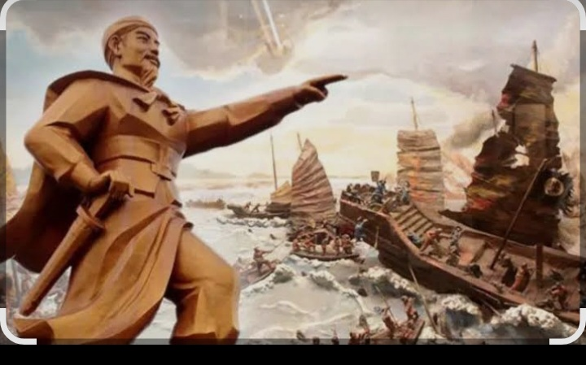
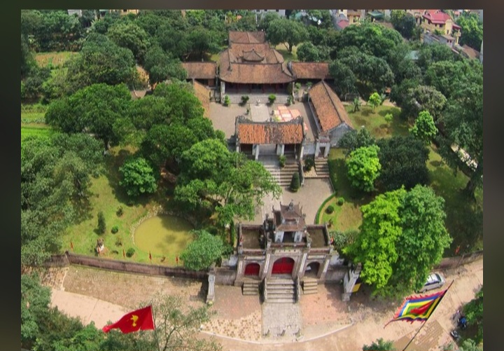
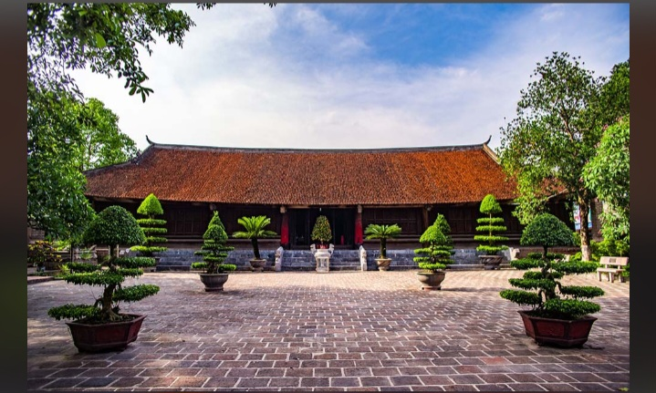
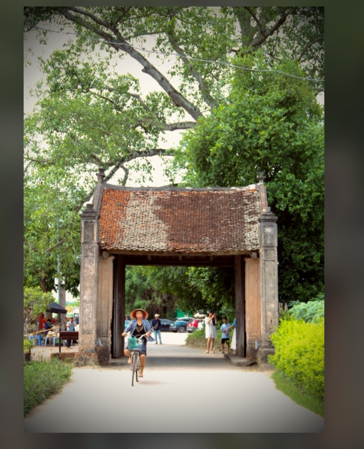
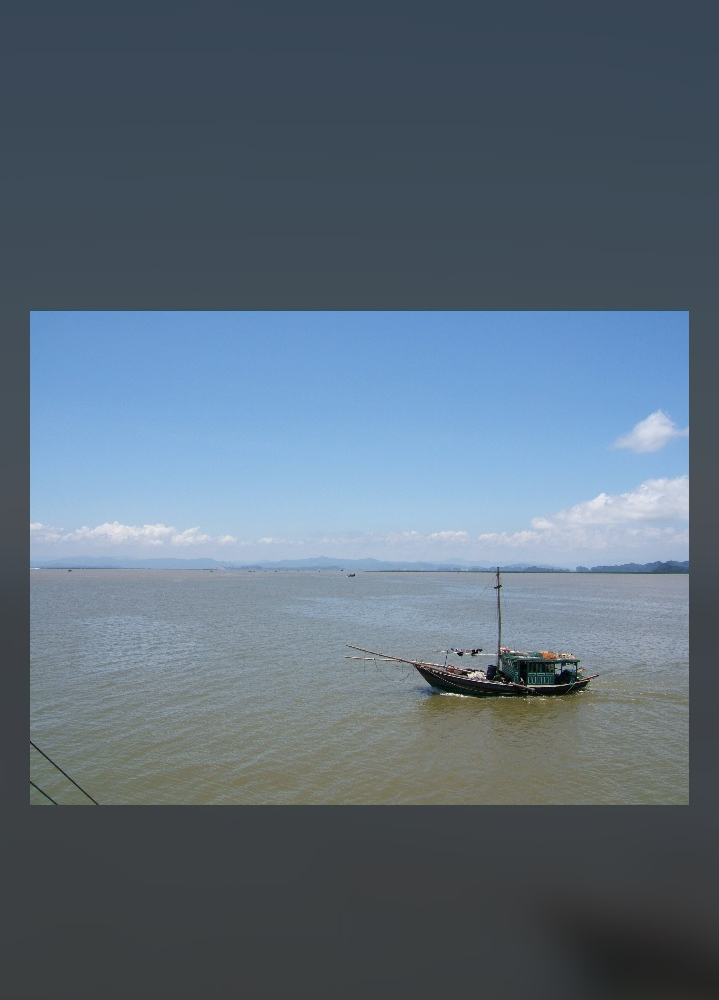

Giới thiệu thư viện
Thư viện tập hợp những hình ảnh tiêu biểu liên quan đến Ngô Quyền, quê hương Đường Lâm, thành Cổ Loa và sông Bạch Đằng. Các tư liệu giúp người đọc hiểu rõ hơn về nhân vật lịch sử và sự kiện có ý nghĩa quan trọng đối với nền độc lập của dân tộc Việt Nam.
Phần 1. Thư viện hình ảnh
Bốn nhóm hình ảnh chính của dự án
1. Hình ảnh Ngô Quyền

2. Di tích Cổ Loa


3. Quê hương Đường Lâm

4. Sông Bạch Đằng

Phần 2. Video tư liệu
Video giúp tìm hiểu thêm về chiến thắng Bạch Đằng
Tìm hiểu chiến thắng Bạch Đằng năm 938
Bạn có thể sử dụng video lịch sử phù hợp để minh họa cho nội dung dự án. Video bên dưới là khung nhúng mẫu; nếu không phát được, hãy thay bằng đường dẫn video mà bạn đã kiểm tra.
Nếu video không phát trên TrebEdit, hãy mở website bằng trình duyệt có kết nối Internet hoặc dùng liên kết YouTube đã được kiểm tra.
Phần 3. Nguồn tham khảo
Ưu tiên nguồn bảo tàng và cơ quan chuyên môn
-
Bảo tàng Lịch sử Quốc gia
Nguồn tham khảo để tìm hiểu về Ngô Quyền và chiến thắng Bạch Đằng năm 938.
Truy cập Bảo tàng Lịch sử Quốc gia -
Bảo tàng Lịch sử Quân sự Việt Nam
Tham khảo thêm thông tin về lịch sử quân sự và các chiến thắng tiêu biểu của dân tộc.
Truy cập Bảo tàng Lịch sử Quân sự Việt Nam -
Wikimedia Commons
Có thể tra cứu hình ảnh về di tích, địa danh và cảnh quan. Cần kiểm tra chú thích, tác giả và giấy phép của từng ảnh trước khi sử dụng.
Truy cập Wikimedia Commons -
Wikipedia tiếng Việt – Ngô Quyền
Dùng để tra cứu ban đầu; nên đối chiếu các sự kiện quan trọng với tài liệu chuyên môn.
Đọc bài Ngô Quyền
Phần 4. Phân công nhiệm vụ
Bảng dưới đây là mẫu để nhóm điền tên và công việc thực tế của từng thành viên.
| Thành viên | Công việc chính | Công việc hỗ trợ |
|---|---|---|
| Nguyễn Phúc Đăng | Tìm kiếm, chọn lọc và kiểm tra thông tin lịch sử; tổng hợp nguồn tham khảo. | Kiểm tra chú thích và độ chính xác của nội dung. |
| Lê Quỳnh Chương | Nhập và chỉnh sửa HTML/CSS; sắp xếp hình ảnh và hoàn thiện giao diện. | Kiểm tra liên kết, thử nghiệm website trên điện thoại và sửa lỗi hiển thị. |
Kết luận
Qua hình ảnh và tài liệu tham khảo, chúng ta hiểu rõ hơn về Ngô Quyền, quê hương Đường Lâm, Cổ Loa và chiến thắng Bạch Đằng năm 938. Việc sử dụng tư liệu có nguồn rõ ràng góp phần nâng cao tính chính xác và giá trị của dự án.